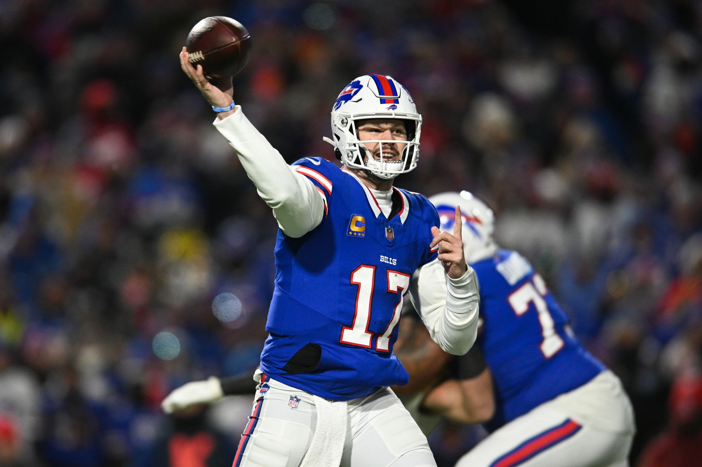
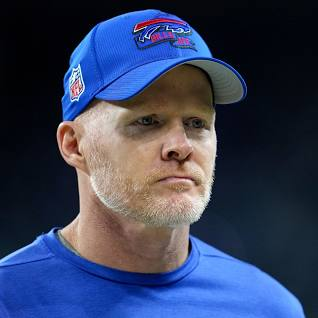
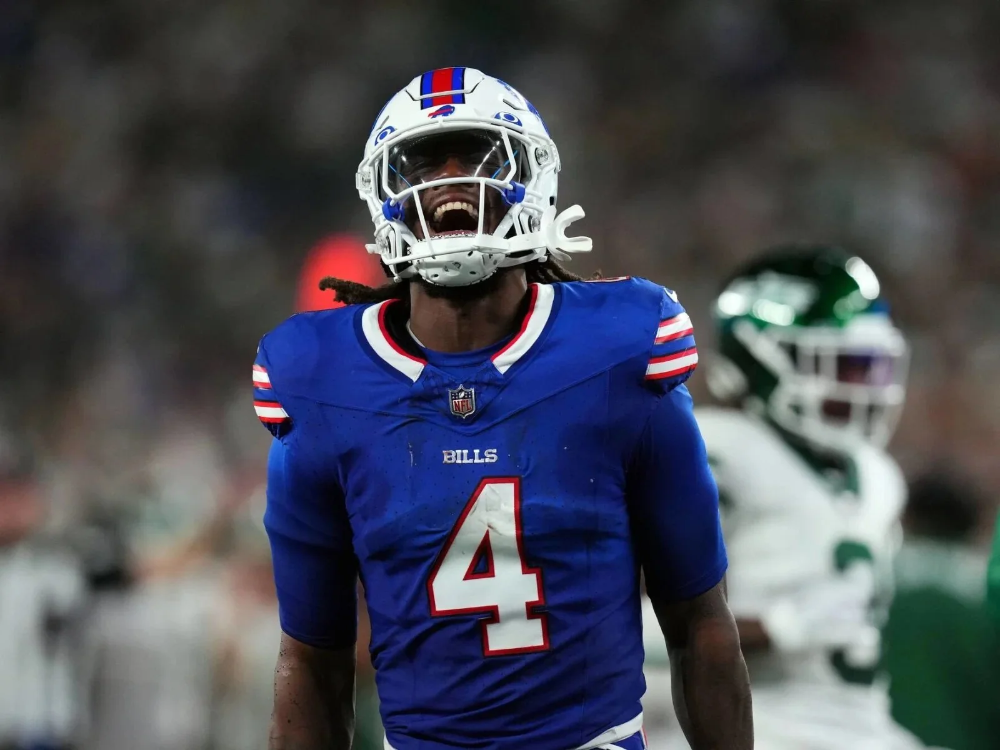
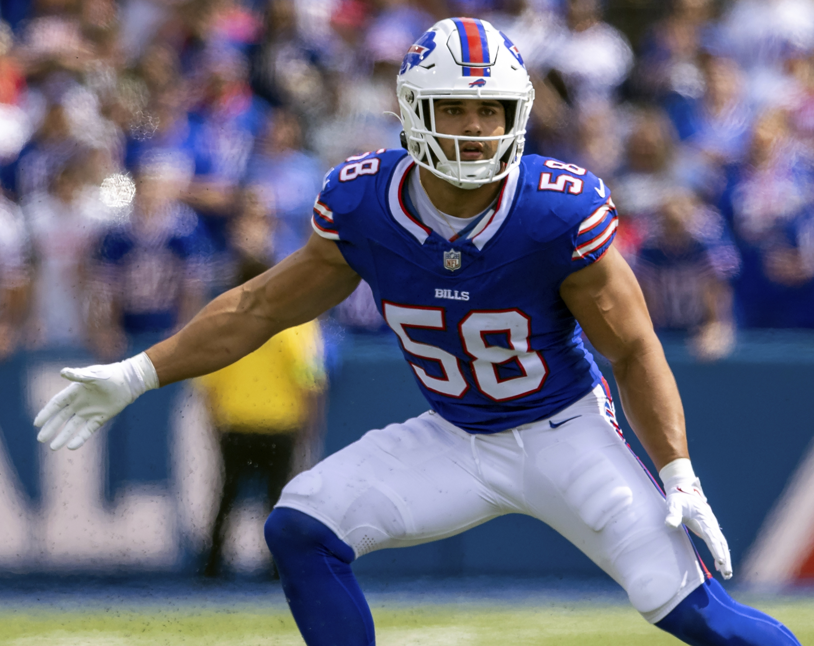
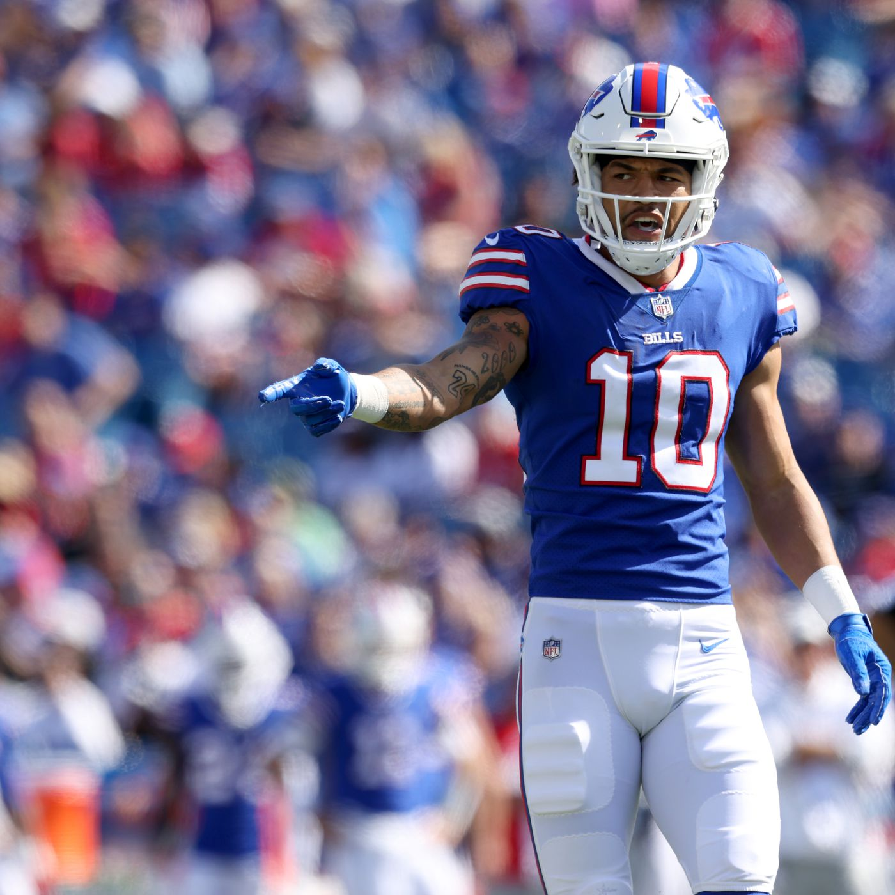
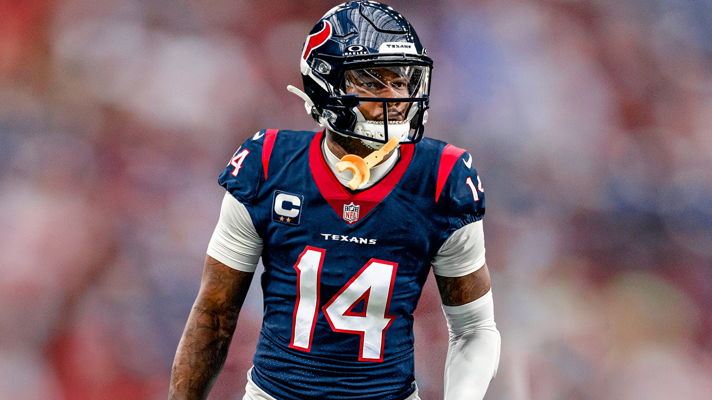

Here at Buffalo Blitz, we intend to bring you all things Bills! You will be able to find the latest news on the team as well as deep dive into the galleries trying to look for you or friends.




Recent News

Receivers after Diggs is gone: Curtis Samuel, Khalil Shakir and Mack Hollins...
Bills look to rebuild after losing star power on both sides of the ball.
Josh Allen and Damar Hamlin did not win their respective awards, many people thought that Damar was the favorite to win but he ended up losing to Joe Flacco the QB of the Cleveland Browns.
The NFL Honors are tonight, Josh Allen is up for MVP and Damar Hamlin is up for Comeback Player of the Year after his miraculous come back to football.
Bills hire Matt Edwards as defensive line coach.
Joe Brady, the interim offensive coordinator for the Bills was hired as next season's offensive coordinator.
With the season coming to a disappointing end Bills will look inward to see why they can’t get over the hump.
The pro bowl weekend had three Buffalo Bills in attendance, WR Stefon Diggs, RB James Cook and LT Dion Dawkins. All of them participated in the new flag football game where the AFC beat the NFC 40-33.
The Buffalo Bills lose 27-24 to the Kansas City Chiefs with a missed clutch field goal by Tyler Bass.
After the third quarter of play the Bills lead 24-20 due to a go-ahead touchdown catch from Khalil Shakir.
The Bills are up 17-13 at half against the Kansas City Chiefs, Both Bills touchdowns were ran in by Josh Allen himself.
After the first quarter of play the Bills and Kansas City are tied up at 3 a piece.
Chopping Block

HUGE NEWS: Bills trade away Stefon Diggs to the Houston Texans for a second round pick in 2025!
Bills sign WR Curtis Samuel to a three-year $24 Million dollar deal.
Bills have signed QB Mitch Trubisky to a 2-year deal as the backup QB
News From Miami!: Jordan Poyer signs a one-year deal with Bills rivals in Miami
Bills Resign Safety Taylor Rapp to a three-year deal up to 14.5 million dollars
Bills release Gabriel Davis!
CLEANING HOUSE: Bills release star talent in Tre'Davious White, Jordan Poyer, as well as Mitch Morse (Find out more on the blog page)
Punter Matt Hack was brought back to Buffalo after playing this past season for the Rams
Restructured Rasul Douglas as well as Von Miller's contracts in order to free up 20 million in cap space
TRADE ALERT: Bills trade Ryan Bates to Chicago in exchange for a 5th round pick
The Draft
Bills will have the 28th pick in the draft
Many speculate we will be drafting a WR as we haven't re-signed Gabriel Davis and traded away Diggs
Keon Coleman and Adoni Mitchell are the likely candidates for the first round
Possibility of trading up to ensure we get a top WR
The NFL Draft will be in Detroit, Goodell wants to host the draft in non-Super Bowl locations
Might be the best WR draft class the league has seen in a while
This draft class can have the entire NFL trading their picks around as it is one of the most talented classes in a while
The Bills have 11 picks in this upcoming draft class